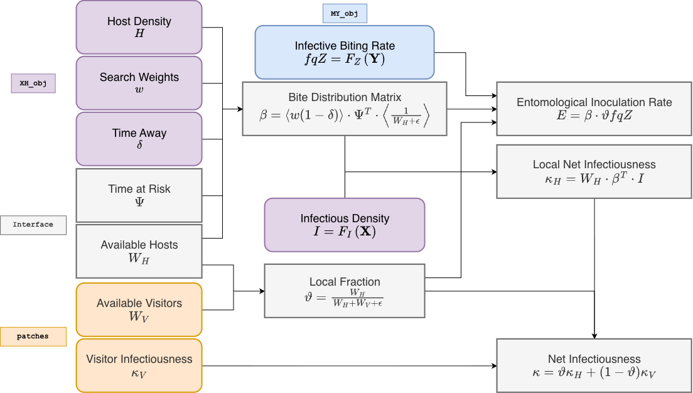

The transmission interface was developed to compute two terms:
the daily local entomological inoculation rate (EIR), the number of infective bites, per person in each stratum, per day from exposure within the modeled patches. Note that the daily force of infection (FoI) is computed using the exposure interface, which can also use information about travel malaria, environmental heterogeneity, and pre-erythrocytic immunity.
the net infectiousness (\(\kappa\)), the probability a mosquito would become infected after blood feeding on a human.
To compute these terms, the bite distribution matrix (\(\beta\)) is constructed. It allocates bites in each patch per member of each population stratum, accounting for the fraction of time spent not traveling. In a model with one patch and one stratum and positive host availability, \(\beta = 1/H.\) The matrix uses human availability and time at risk to allocate bites in patches to humans in strata.
By design, it uses the same quantities that were defined in the blood feeding interface.

Computation
-
\(\beta\) — The bite distribution matrix, \(\beta\), allocates bites per member of each population stratum, accounting for absence while traveling. The infective biting density per unit of local host availability in each patch is \(fqZ/W_H.\) In the formula, angle brackets denote a diagonal matrix. Bites are allocated using search weights, time at risk, and the fraction of time not traveling.
The vector of local host availability, \(W_H,\) has length
nPatchesand is computed as part of Blood Feeding.The density of residents who are not traveling is \((1-\delta) H\).
The function that computes \(\beta\) replaces zero entries of \(W_H\) with one before dividing, to avoid division-by-zero errors.
\(\vartheta\) — Bites are allocated by availability. The availability of visitors in each patch \(W_V\) is a variable that can be set by setup_visitors. If \(W_H+W_V=0\), the implementation sets the local fraction to one by convention.
The bite distribution matrix is:
\[\beta = \left<w (1-\delta)\right> \cdot \Psi^T \cdot \left< \frac{1}{W_H} \right> \]
The EIR
\(fqZ\) — The net infective human biting rate, \(fqZ,\) is the number of infective bites on humans by adult mosquitoes in each patch, per day. A fraction of these, \(\vartheta\), are on available humans \((W)\) as opposed to visitors \((V).\) This is one of the dynamical terms computed from the state space describing infected mosquitoes (Y) by a function (denoted \(F_Z\) and called
F_fqZ) supplied by each MY module.\(E\) — The EIR is computed by taking the product of the local fraction and net infective human biting rate and the mixing matrix.
The EIR is \[ \beta \cdot \vartheta (fqZ)\]
The product \(\vartheta(fqZ)\) is element-wise; multiplication by \(\beta\) is a matrix-vector product.
Net Infectiousness
The fraction of mosquitoes that get infected after blood feeding on a human in each patch is called net infectiousness. It uses the bite distribution to average infectiousness by availability for all humans present.
\(I\) — A function \(F_I\) supplied by each XH component computes the infectious density of each stratum: the probability a mosquito would be infected after biting a member of each stratum is \(I/H\).
\(\kappa_H\) — Using the transpose of \(\beta,\) biting on humans is averaged by availability at the patch level. This gives the net infectiousness of the resident population, the probability a mosquito would become infected after blood feeding on a resident human in the patch.
\(\kappa_V\) — The infectiousness of visitors is a variable that can be set up by setup_vis_kappa.
Net infectiousness is \[ \vartheta \kappa_H + (1-\vartheta) \kappa_V\]